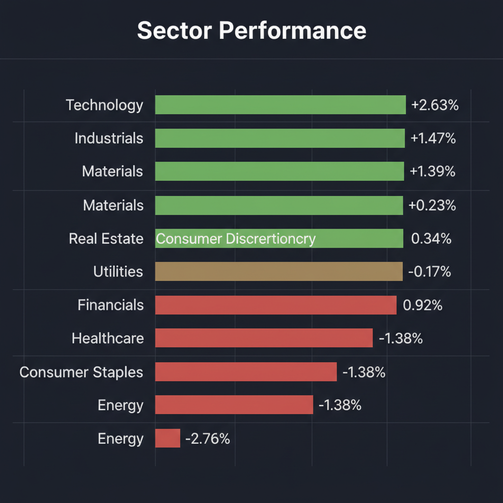
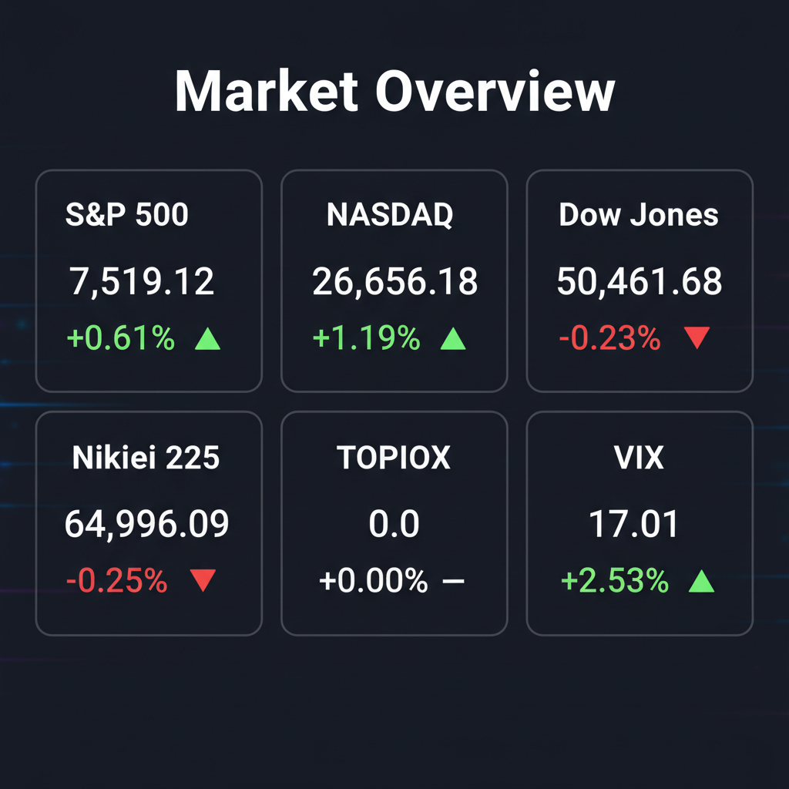

Daily Investment Report - 2026-05-27
Generated: 2026/5/27 7:37:04


投資チームミーティングの合議および分析を統合し、投資家向けの最終レポートを議長として作成いたしました。
本ミーティングでは、史上最高値を更新する「AIテック株の熱狂」と、水面下で高まる「地政学・金融引き締めの地雷原」という極端な二極化について活発な議論が行われました。特にテンバガーハンターが推奨する赤字グロース株に対し、ファンダメンタルズやリスクマネージャーから強い懸念が示されるなど、対立点も明確になっています。これらを踏まえ、投資家が即座に実践できるバランスの取れた戦略を提示します。
1. エグゼクティブサマリー
- AI・テクノロジー主導でS&P 500やNASDAQが過去最高値を更新する一方、ダウ平均の軟調さや恐怖指数（VIX）の上昇が示すように、市場は極端な「一本足打法」による歪みと急落リスクを抱えています。
- 今回の個別銘柄評価では、最高益かつ巨額自社株買いを発表した日本化薬（4272.T）や、Q1好決算のOoma（OOMA）など、強固なファンダメンタルズを持つ中小型株を「中立（押し目待ち）」とし、売上ゼロのNNEや次期予想未定の東洋紡は「弱気（警戒）」と判定しました。
- 短期的な過熱感と複合的なリスクを考慮し、現在は攻めよりも守りを重視し、キャッシュ比率を高めて次の投資機会（押し目）に備えるディフェンシブな姿勢を推奨します。
2. 注目銘柄リスト
強気（買い推奨）- 平均スコア7.0以上
- 該当なし [平均スコア -]: 今回評価した銘柄群の中に、金利高止まりおよび地政学リスクを克服して現時点で即座に全力買いできる「スコア7.0以上」の銘柄は存在しません。市場全体の過熱感から、優れた銘柄であっても一度調整を待つべき局面と判断しています。
中立（様子見）- 平均スコア4.0〜6.9
- 日本化薬（4272.T） [平均スコア 6.8/10]: 2026年3月期に売上高5期連続過去最高（2,418億円）を達成し、発行済株式の8.75%（150億円）にのぼる大規模な自社株買いを発表したことで下値は極めて堅いですが、自動車安全部品事業における需要変動や原材料費高騰リスクを考慮し、一時的な窓埋め（価格調整）を待つ中立評価とします。
- Ooma（OOMA） [平均スコア 6.6/10]: 2027年度第1四半期の売上高が前年同期比25%増の8,110万ドル、非GAAP純利益が73%増と大躍進を遂げ、買収の統合も成功していますが、ユニファイド・コミュニケーション市場における競合激化と52週高値付近での上値抵抗を警戒し、様子見とします。
- Rocket Lab USA（RKLB） [平均スコア 5.6/10]: 受注残高が過去最高の22億ドルに達し、Motiv Space Systemsの買収や米宇宙軍からの9,000万ドルの契約など強力なモメンタムを有しますが、依然として赤字継続であり、過去1年の株価急騰（240%上昇）によるRSIの買われすぎ感から、20日移動平均線付近までの押し目を待ちます。
- Digital Turbine（APPS） [平均スコア 4.8/10]: 第4四半期決算が市場予想を上回り、Google CloudやOrangeとのAI・配信提携強化を背景に営業黒字転換を達成して株価は17%急騰しましたが、約3.5億ドルの重い純債務負担やプラットフォーマーの広告規制リスクを考慮し、慎重な中立評価とします。
弱気（警戒）- 平均スコア4.0未満
- 東洋紡（3101.T） [平均スコア 3.8/10]: 2026年3月期決算は大幅増益で着地したものの、中東情勢緊迫化に伴うコスト増を懸念して次期業績予想を「未定」としており、世界シェア5割を握る海水淡水化用の逆浸透（RO）膜市場において中国勢から激しい安値攻勢を受けていることが懸念材料です。
- NANO Nuclear Energy（NNE） [平均スコア 3.4/10]: 原子力輸送会社STS社を1,300万ドルで買収し、AIデータセンター向け超小型原子炉の開発ロードマップを進めていますが、現段階では売上高ゼロの完全な開発段階（投機）であり、高金利環境下での資金枯渇や規制当局（NRC）による認可遅延のリスクが極めて高いため、明確に弱気と判断します。
3. セクター推奨ランキング
- 1位：AI・半功体（次世代インフラ）セクター: マイクロンの1兆ドル突破が示す通り、AIハードウェアの実需に基づくデータセンター関連投資は依然として強力な相場の主導テーマです。
- 2位：防衛・宇宙・サイバーセキュリティセクター: 中東におけるレバノン地上戦拡大や、イランのハッカーによるロサンゼルス交通機関への侵入など、地政学リスクの多面化に伴い、景気後退に強いディフェンシブ・グロースとして機能します。
- 3位：運輸・物流（構造改革）セクター: FedExの貨物部門分離や日本のしまむらの経営刷新に見られるように、独自の企業変革（スピンオフや資本効率改善）によってマクロ環境に関わらず価値を引き出せる個別テーマです。
- 4位：金融・素材（伝統的マテリアル）セクター: 欧州中央銀行（ECB）の利上げ継続方針や、中国の安値攻勢に直面する日本のRO膜など、マクロの金利高止まりや競争激化、原材料コスト増の不確実性が残ります。
- 5位：伝統的エネルギーおよび生活必需品セクター: 地政学リスクの緊迫化にもかかわらず、伝統的エネルギー（XLE）は大幅下落トレンドにあり、金利高止まり局面におけるヘルスケアや生活必需品などの「債券代替」としての魅力は低下しています。
4. 今週の注目イベント
- 5月27日: シカゴ日経平均先物が一時65,500円（夜間取引）に到達、日本現物市場への影響を注視
- 5月27日夜: 化学大手デュポン（DuPont）決算発表、原油価格の影響度と原材料価格の転嫁状況を確認
- 6月2日: パロアルトネットワークス（Palo Alto Networks）決算発表、発表前後の株価変動予測（ボラティリティ予測約8%）
- 6月2日: シグネット・ジュエラーズ（Signet Jewelers）決算発表、今後の消費動向を占う注目決算（ボラティリティ予測約10%）
5. リスク要因
- 市場の薄さ（ブレスの欠如）と一本足打法: S&P 500やNASDAQの上昇が、エヌビディアやマイクロンなどの極めて限定的なAI巨頭にのみ依存しており、これらが崩れた場合のドミノ倒し的パニック売りのリスク。
- 地政学的紛争の実体経済・インフラへの直接打撃: レバノン紛争拡大による航空便の相次ぐキャンセル、ロサンゼルス交通網へのサイバー攻撃など、紛争が物理空間とサイバー空間の両方で実体経済を脅かすリスク。
- 高金利の長期化と欧州の追加利上げ: ECBの利上げ姿勢が圧倒的に織り込まれる中、世界的な高金利の長期化が、RKLBやNNEといった赤字中小型株のキャッシュ燃焼を悪化させ、財務を圧迫するリスク。
- 恐怖指数（VIX）と株価のベア・ダイバージェンス: 株価が史上最高値圏にあるにもかかわらず、VIX（17.01）が上昇を続けており、スマートマネーが水面下でプットオプションによるテールリスク・ヘッジを急ピッチで進めている急落シグナル。
6. アクションアイテム
- ポートフォリオ全体のキャッシュ（または米ドル超短期債）比率を最低35%まで引き上げる: 市場の最高値熱狂に浮かれず、暴落時の優良株買い付け余力を確保する。
- 保有中のメガテック・半導体株の30〜50%を利益確定する: AI・テクノロジーセクター（XLK等）への投資比率は、どれほど魅力的であってもポートフォリオ全体の15%以下に厳格に制限する。
- 投機的グロース株（RKLB、NNE等）の保有を最大2〜3%以下に制限する: 金利高止まり局面におけるこれら赤字企業の財務リスクを侮らず、新規購入は20日移動平均線（20EMA）への押し目形成時のみに限定する。
- 「自己変革型」中小型バリュー株（日本化薬やOoma等）の押し目買い候補リストを作成する: 市場全体が一時的に調整（プルバック）した瞬間に、これら強固なBSを持つ銘柄の仕込みを開始する。
7. 米国株インデックス戦略
- 現在の市場環境の評価: インデックスは「原則維持（ホールド）」としつつも、新規の追加一括投資は控え、一部の利益確定による現金化（キャッシュ確保）を強く推奨します。理由は、インデックスの上昇を支えているのが一部の巨大ハイテク株に限定される歪んだ市場構造であり、VIXの上昇が示すように水面下での急落警戒感が極めて高いためです。
- 今後1〜3ヶ月の見通し: テクニカル的には史上最高値更新の青天井パターンですが、エヌビディアなどの牽引役が「重要な節目（キーレベル）」に達しており、中東の緊迫化や欧州の追加利上げ、AutoZoneに見られる「好決算でも売られる」市場心理を勘案すると、今後1〜3ヶ月以内に10〜15%程度の健康的な調整（一時的急落）を経験する可能性が極めて高いと予測します。
- 積立投資への影響: 毎月の自動積立（ドルコスト平均法）は、マクロの波を均す上で調整の必要はありません。ただし、現在のような史上最高値圏において、追加でまとまった資金を「一括投資」すること、あるいは積立額を急激に「増額」することは避けるべきであり、まとまった余剰資金は次の調整局面までキャッシュとして温存すべきです。
- 注意すべきイベント: 最も重要なのは「エヌビディアの節目突破の可否（週足終値）」、および6月2日を皮切りに発表されるパロアルトなどのサイバーセキュリティ企業の決算です。また、今後の日米欧の中央銀行による政策金利の発表（FRBの金利方針やECBの追加利上げ判断）は、インデックス全体の割引率に直結するため最注視が必要です。
- リスクシナリオ: 最悪のシナリオは、中東紛争の全面化によるホルムズ海峡封鎖や原油価格の急騰（第三次オイルショック懸念）が引き起こすインフレの再燃と、それに伴う「FRBの利下げ見送り（あるいは追加利上げ検討）」です。同時にAI半導体株の崩壊が重なった場合、インデックスは数週間で15〜20%のパニック的な急落に至る可能性があります。対応策としては、事前にキャッシュ比率35%を維持しておくこと、およびポートフォリオの1〜2%のコストで「S&P 500のプットオプション（満期3ヶ月程度のアウト・オブ・ザ・マネー）」を購入し、テールリスクに備えることを提案します。
Agent Scoring Matrix（Web調査後の合議評価）
各エージェントがWeb調査結果を踏まえて独立に10段階評価した結果です。平均7以上=強気、4〜6.9=中立、4未満=弱気。
| 銘柄 |
ファンダメンタルズアナリスト | テンバガーハンター | マクロエコノミスト | テクニカルストラテジスト | リスクマネージャー |
平均 |
判定 |
| 4272.T |
8
堅牢な財務と大型自社株買いで下値硬い | 4
安定感はあるが時価総額が大きく10倍の爆発力に欠ける | 8
強固な財務と巨額自社株買いが下値を強力に支持 | 8
高値更新後の押し目、自社株買いが強力な下値支持 | 6
自社株買いで下値は堅いが自動車市況悪化のリスクあり |
6.8 |
中立 |
| OOMA |
8
Q1好決算、黒字化達成で成長力と割安感を両立 | 7
時価総額5億ドルの好収益UCaaS、M&Aで高成長へ | 7
好決算と買収シナジーによる大幅増益を評価 | 7
主要移動平均線が上向き、52週高値突破目の前のモメンタム | 4
高値圏で競争が激しく利益成長の持続性に疑問 |
6.6 |
中立 |
| RKLB |
5
受注残は豊富だが赤字継続で安全マージンが不足 | 9
受注残22億ドル突破、SpaceXに並ぶ宇宙インフラの覇者 | 6
受注残最高も金利高止まり下の赤字継続に警戒 | 6
モメンタム強力だが高値圏でRSI過熱、押し目を待つ局面 | 2
過去１年で急騰も赤字継続で先行投資の負担が重い |
5.6 |
中立 |
| APPS |
4
黒字転換も重い純債務が財務の安全性を損なう | 9
GoogleとAI提携、大底からの黒字化で大化け直前 | 5
業績反転とAI提携は好感も重い債務負担が懸念 | 4
決算で急騰も下落トレンド内、重い債務と抵抗線が障壁 | 2
巨額の純債務と広告規制強化による収益悪化リスク |
4.8 |
中立 |
| 3101.T |
4
次期予想未定で原材料コスト上昇の不確実性高まる | 3
業績未定の不透明感、旧態依然の事業でテンバガーは無理 | 4
中東情勢緊迫化に伴う通期予想未定を嫌気 | 5
出来高急増し反発も、業績予想未定で上値抵抗が意識 | 3
中東緊迫化に伴う業績予想未定でコスト増リスク大 |
3.8 |
弱気 |
| NNE |
2
売上ゼロの開発段階で極めて投機的、財務リスク大 | 10
売上ゼロだが核輸送を独占、AI電力飢餓を救う破壊的本命 | 2
売上ゼロの投機段階で高金利下の財務リスク大 | 2
売上ゼロで投機化、支持線が機能せず急落リスク極めて高い | 1
売上ゼロの投機的銘柄で開発遅延と資金枯渇のリスク |
3.4 |
弱気 |
Web Research Results (Google Search Grounding)
エージェントが推奨した中小型株について、Google検索で最新情報を調査した結果です。
4272.T
日本化薬（4272.T）に関する最新情報は以下の通りです。
1. 企業概要
日本化薬は、火薬・染料・医薬・樹脂の基盤技術を融合した総合化学品メーカーです。モビリティ＆イメージング（自動車安全部品など）、ファインケミカルズ（機能性材料、色素材料、触媒など）、ライフサイエンス（医薬、農薬など）の3つの事業領域を展開しています。主要製品として、半導体封止材用エポキシ樹脂とエアバッグ用インフレータで世界トップシェアを誇り、色素材料においても国内最大のメーカーです。
時価総額は2026年5月22日時点で約3,109億円、または2026年5月26日時点で約3,464億8,000万円です。
2. 直近の業績・決算情報
2026年3月期通期連結決算は、2026年5月12日に発表されました。
* 売上高: 2,418億5,100万円（前年同期比で増収）
* 営業利益: 224億5,400万円（前年同期比で増益）
* 経常利益: 254億7,800万円（前年同期比で増益）
* 当期純利益: 246億4,100万円（前年同期比で増益）
* 1株当たり当期純利益: 161.18円（前期比+54.01円）
* ROE: 9.0%
2026年度（2027年3月期）の業績見通しとして、売上高2,606億円（前期比187億円増）、営業利益254億円（前期比29億円増）、親会社株主に帰属する当期純利益223億円（前期比23億円減）を見込んでいます。
3. 最新ニュース・材料（直近1-2週間の重要なニュース）
* 2026年5月12日、2026年3月期通期連結決算の発表と同時に、発行済株式総数の8.75%にあたる150億円を上限とする自己株式の取得を発表しました。
* 2026年5月23日には、「日本化薬、売上高5期連続で過去最高 医薬・ファインケミカルズが利益を牽引、半導体材料とCDMOを成長領域に」というニュースが報じられました。
4. アナリスト評価・目標株価
直近の信頼できるアナリスト評価や目標株価は、明確な形で多くは確認できませんでした。過去の情報としては、SBI証券が目標株価を1,300円とし「中立」評価を継続したレポート（2018年）がありますが、これは古い情報です。 一部の情報源では、アナリスト評価や目標株価が「データなし」とされています。 2026年5月15日の富途资讯の報道では、SBI証券が目標株価を2,200円から2,550円に修正したとの記述がありますが、他の情報との整合性は不明瞭です。
5. リスク要因
* 新製品開発の遅れ: 新製品の開発遅延や上市の遅れは、競争力低下や収益減少につながる可能性があります。
* 主要事業の変動: セイフティシステムズ事業では新型インフレータ等の開発遅延、ファインケミカルズ事業では情報関連分野での需要変動や競合激化がリスクとなります。
* 医薬品の薬価改定: 毎年実施される薬価改定は、医薬品事業の売価にマイナスの影響を与える可能性があります。
* 原材料価格・為替変動: 各種原料の高騰や為替の変動が製造原価や業績に影響を及ぼす可能性があります。
* 財務上の懸念: 自己資本比率は70.0%と高く、財務の安全性は良好ですが、有利子負債は足元で増加傾向にあります。
6. 株価の最近の動き
日本化薬の株価は、2026年初来安値の1,669.0円（2026年1月5日）から上昇基調にあり、2026年5月13日には年初来高値2,180.5円を更新しました。 その後、高値からやや調整局面に入り、2026年5月26日現在の終値は2,059.5円（情報源により差異あり）付近で推移しています。 直近20日前比では約18.01%の上昇を見せています。
OOMA
以下にOOMAに関する投資判断に必要な最新情報をまとめます。
1. 企業概要（事業内容、時価総額、業界でのポジション）
Ooma Inc.（NYSE: OOMA）は、企業および消費者向けのスマートコミュニケーションプラットフォームを提供するアメリカの公開企業です。主な事業内容は、VoIP（Voice over IP）電話サービス、ユニファイド・コミュニケーション・アズ・ア・サービス（UCaaS）、スマートセキュリティソリューションなど多岐にわたります。具体的には、中小企業向けのクラウドベースのマルチユーザー通信システム「Ooma Office」や、カスタマイズ・拡張が可能なUCaaSソリューション「Ooma Enterprise」を提供しています。また、消費者向けには「Ooma Telo」ベーシックサービスやプレミアサービス、スマートセキュリティソリューション、モバイルアプリ「Talkatone」も手掛けています。
2026年5月22日時点の時価総額は約5億2,531万ドルで、発行済株式数は約2,747万株です。 業界においては、VoIPおよびUCaaS市場の主要通信事業者として位置づけられています。
2. 直近の業績・決算情報（売上、利益、成長率）
Oomaは2027年度第1四半期（Q1 FY2027）の決算で好調な業績を報告しました。
* 売上高: 8,110万ドルで、市場予想の7,982万ドルを上回りました。前年同期比では25%増となっています。
* 調整後1株当たり利益（EPS）: 0.35ドルで、市場コンセンサス予想の0.32ドルを0.03ドル上回りました。
* 非GAAP純利益: 970万ドルで、前年同期比73%増を記録しました。
* 調整後EBITDA: 1,180万ドルで、前年同期比78%増となりました。
この売上高の成長は、主にビジネス向けサブスクリプションサービスの拡大と、FluentStreamおよびPhone.comといった最近の買収の統合成功によるものです。
3. 最新ニュース・材料（直近1-2週間の重要なニュース）
直近の重要なニュースとしては、2026年5月26日に発表された2027年度第1四半期決算が市場予想を上回り、株価が時間外取引で上昇したことが挙げられます。この決算発表は、同社の好調な財務結果と将来の成長可能性に対する投資家の信頼を反映しており、株価は52週高値に近づいています。
4. アナリスト評価・目標株価（あれば）
アナリストのOomaに対する平均評価は「買い」であり、平均目標株価は18.96ドルから19.31ドルの範囲です。
* B. Rileyは、Oomaの株価目標を18.50ドルから24ドルに引き上げ、「買い」推奨を維持しています。
* Public.comのアナリストは「強い買い」のコンセンサス評価を与えており、2026年の価格予測は18.77ドルです。
* MarketBeatによると、OOMAの現在の目標株価は19.00ドルであり、アナリストは12ヶ月後の株価に1.14%の下落余地があると予測しています。
5. リスク要因（競合、規制、財務上の懸念）
* 競合: ユニファイド・コミュニケーション市場は競争が激しく、多くの大手テクノロジー企業が参入しています。Oomaは、中小企業および消費者市場において、他のVoIPおよびUCaaSプロバイダーと競合しています。
* 規制: 通信サービスを提供しているため、電気通信に関する規制変更が事業に影響を与える可能性があります。
* 財務上の懸念: 過去には赤字を計上した年度もありましたが、2026会計年度にはGAAPベースでの黒字転換を果たし、財務健全性が改善されています。 しかし、継続的な成長と収益性を維持できるかが注目されます。
6. 株価の最近の動き（直近のトレンド）
Oomaの株価は、2026年5月22日時点で19.05ドル付近で推移しています。 過去52週間の高値は19.59ドル、安値は9.79ドルであり、直近では52週高値に近づいています。
* 直近の決算発表後、株価は時間外取引で1.46%上昇し、19.40ドルに達しました。
* 株価トレンドとしては、5日移動平均線、25日移動平均線、75日移動平均線がすべて上昇を示しており、目先、短期、中期的に上昇トレンドにあると言えます。
* 2026年5月21日時点の前日終値は18.87ドルでした。
3101.T
東洋紡（3101.T）に関する投資判断に必要な最新情報は以下の通りです。
1. 企業概要
東洋紡は、フィルム・機能樹脂、産業マテリアル、ヘルスケア、繊維・商事、不動産などを手掛ける総合化学メーカーです。包装用フィルム、工業用フィルム、診断薬用酵素、医薬品、エンジニアリングプラスチック、エアバッグ用基布、不動産などが事業の柱となっています。VOC処理装置、海水淡水化用逆浸透膜、液晶偏光子保護フィルム「コスモシャインSRF」などの高機能品に強みを持っています。
現在の時価総額は約1,406.6億円から1,488億円で推移しています（2026年5月25日～26日時点）。 東証プライム市場に上場しており、繊維製品業界において51社中7位に位置しています（2026年3月31日時点）。
2. 直近の業績・決算情報
2026年3月期（通期）の連結決算は、2026年5月11日～12日に公表されました。
* 売上高：4,215億6300万円（前期比△0.1%減）
* 営業利益：279億600万円（前期比67.6%増）
* 経常利益：228億7800万円（前期比116.0%増）
* 親会社株主に帰属する当期純利益：111億7400万円（前期比457.8%増）
* 年間配当金：1株あたり40円
売上高はエアバッグ用基布事業の再編により予想を下回ったものの、営業利益、経常利益、親会社株主に帰属する当期純利益はいずれも予想を大幅に上回る増益を達成しました。 利益改善の要因としては、フィルム事業の大幅増益が牽引し、売値の改善や原燃料価格の安定が寄与しました。
次期（2027年3月期）の連結業績予想は、中東情勢の緊迫化に伴う事業環境の不透明感から、合理的な算定が困難として「未定」とされています。
3. 最新ニュース・材料（直近1-2週間）
* 2026年5月11日～12日に、2026年3月期通期連結決算を発表し、経常利益が前期比116%増と大幅な増益を達成したことが報じられました。
* 2026年5月12日には、日系大手証券が東洋紡のレーティングを「中立」に据え置きつつ、目標株価を1,500円から1,800円に引き上げました。
* 2026年5月25日付のニュースでは、東洋紡エムシーが2028年度までに海外売上高比率70%を目指し、インドに現地法人を設立する方針が報じられています。
4. アナリスト評価・目標株価
2026年5月12日、日系大手証券が東洋紡のレーティングを「中立（Neutral）」に据え置き、目標株価を1,800円に引き上げました。
2026年5月11日時点のレーティングコンセンサスは、アナリスト3名による評価で3.67と「やや強気」の水準であり、目標株価コンセンサスは1,950円です。
2026年5月13日更新のアナリスト評価では、アナリスト3名中33.33%が「強気」、66.67%が「中立」と評価しており、平均目標株価は2,050.00円、目標株価上限は2,450.00円、下限は1,800.00円となっています。
5. リスク要因
* 原材料供給・価格の変動: 中東地域の情勢不安が長期化した場合、石油・ナフサ由来の原材料の供給停滞や価格高騰が発生し、調達コスト増や生産量・利益率への影響が懸念されます。
* 業績見通しの不確実性: 2027年3月期の連結業績予想が、中東情勢の緊迫化による事業環境の不透明感から「未定」とされており、今後の業績に対する不確実性が高いです。
* 市場環境の変化: 主力事業であるフィルムや産業マテリアル（自動車用繊維資材など）は、EV市場の低迷や自動車用途の市況変動など、各市場の需要動向に影響を受ける可能性があります。
6. 株価の最近の動き
株価は2026年5月20日から5月26日にかけて、1,557円から1,714円へ10.1%上昇しました。 特に5月25日には5.23%高となり、出来高も前日比222%増と活発な取引が見られました。 これは、2026年3月期決算発表（5月13日終値1,729円）後の調整局面を経て、再び買いが入り直す動きとされています。 52週高値は1,857円、52週安値は876円です。
APPS
APPS（Digital Turbine Inc.）に関する投資判断に必要な最新情報をまとめます。
1. 企業概要（事業内容、時価総額、業界でのポジション）
Digital Turbine Inc.（NASDAQ: APPS）は、モバイルテクノロジー企業向けの広告および現金化ソリューションを提供するエンドツーエンドのプラットフォームプロバイダーです。同社は、広告主、出版社、通信事業者、およびデバイスの相手先ブランド供給業者（OEM）に対して、モバイル消費者体験と成果を向上させるサービスを提供しています。そのプラットフォームは、認知度向上、ユーザー獲得、収益化を簡素化し、パートナーをより多くの消費者、多様な方法、様々なデバイスに接続します。具体的には、購入されたデバイスの初回起動時に自動でアプリをインストールするソフトウェアプラットフォームを手掛けており、VerizonやAT&T、Samsungなどのパートナー企業がこのソフトウェアを採用しています。これにより、通信キャリアや端末OEMメーカーはデバイスから収益を得ることが可能になります（広告主から収益を得て、それを自社とパートナーで分配する仕組み）。同社は北米に本社を置き、世界中にオフィスを構えています。
時価総額は、2026年5月22日時点で約5.45億ドルです。
業界においては、テクノロジーセクターの電気通信業界、さらに細分化すると多角的通信サービスに分類されます。 モバイル広告市場において、キャリアやOEMメーカーとの提携を通じて、ユーザーが新しいスマートフォンを手にした最初の瞬間にアプリ・コンテンツを配信するというユニークなポジションを確立しています。これはGoogle Play StoreやApple App Storeとは異なる「第三の配信チャネル」として、アプリ開発者に新たなインストール経路を提供しています。
2. 直近の業績・決算情報（売上、利益、成長率）
Digital Turbineは、2026年5月26日に2026年3月通期（2025年4月～2026年3月）の決算を発表しました。
*
売上高: 前期比15.2%増の5億6,525万ドル（2026年3月通期）を記録しました。第4四半期（1月～3月）の売上高は1億4,250万ドルで、市場コンセンサスの1億2,928万ドルを超え、前年同期比20%増となりました。
*
営業利益: 2026年3月通期では3,404万ドルの黒字に転換しました。前期は5,407万ドルの赤字でした。
*
1株あたり損失（EPS）： 2026年3月通期で0.33ドルの損失となりました（希薄化後）。前期は0.89ドルの損失でした。第4四半期における調整後1株当たり利益（EPS）は0.16ドルで、アナリスト予想の0.10ドルを上回りました。
*
調整後EBITDA: 2026年通期で前年比69%増の1億2,250万ドルに拡大しました。
過去2年間の業績推移を見ると、売上高は2期連続で減収となっており、平均減収率は-14.13%でした。営業利益も2期連続で赤字でした。 しかし、直近の2026年度通期では増収、営業黒字転換を達成しています。
3. 最新ニュース・材料（直近1-2週間の重要なニュース）
*
AI機能の強化とGoogle Cloudとの提携深化: 2026年5月21日、Digital Turbineはモバイルプラットフォーム全体でAI機能を拡張するため、Google Cloudとの提携を深化させたと発表しました。
*
Orangeとの提携による欧州でのアプリ配信再定義: 2026年5月19日、Digital TurbineとOrangeが欧州におけるアプリ配信を再定義するために提携したと報じられました。
*
Databricksとの提携によるモバイルAIイノベーション加速: 2026年5月13日、Digital TurbineとDatabricksがモバイルAIイノベーションを加速するために提携したと発表されました。
*
2026年第4四半期および2027会計年度の業績見通し: アナリスト予想を上回る第4四半期決算と、市場コンセンサスを超える2027会計年度の業績見通しを示したことで、株価が17%急騰しました。2027会計年度の売上高見通しは6億3,000万ドルから6億5,000万ドルのレンジで、中間値はアナリストコンセンサスを上回っています。調整後EBITDAは1億3,500万ドルから1億4,500万ドルの範囲を見込んでいます。
4. アナリスト評価・目標株価（あれば）
2026年5月25日時点でのアナリスト判断（コンセンサス）は「強気買い」です。 2人のアナリストによる平均目標株価は8.75ドルで、現在の株価から92.31%上昇すると予想されています。 みんかぶの目標株価は「6.61ドル」で「買い」と評価されています。
5. リスク要因（競合、規制、財務上の懸念）
*
競合: モバイル広告市場は競争が激しく、マージン圧縮のリスクがあります。AppLovin（APP）のAIエンジン「AXON」や、UnityのGrow事業（Vector）、Liftoff、Molocoなどのモバイルアプリ広告・マネタイゼーションプラットフォームと競合しています。
*
規制: AppleのATT（App Tracking Transparency）やGoogleのプライバシーサンドボックスによるデータ活用制約は、Digital Turbineの事業に影響を与える可能性があります。 しかし、Open App Markets Actなどの規制がアプリストアの独占に風穴を開ければ、Digital Turbineの市場が拡大する可能性も指摘されています。
*
財務上の懸念: Digital Turbineは債務を抱えており、2024年3月末時点で3億8,350万ドルの債務があり、純債務は3億4,990万ドルです。現金および短期債権の合計を負債が上回っており、この不足分は同社にとって重い負担となる可能性があります。 過去にはGAAPベースで赤字が継続している時期もありました。
6. 株価の最近の動き（直近のトレンド）
2026年5月22日時点での株価は4.55ドルです。 52週間の株価レンジは2.74ドルから8.27ドルです。
直近では、2026年5月26日の好調な第4四半期決算発表と2027会計年度の良好な業績見通しを受けて、株価が17%急騰しました。 しかし、長期的に見ると、売上高の減収と営業利益の赤字が続いていた期間があり、P/S（株価売上高倍率）が同業他社を下回る状況が指摘されていました。 2026年度通期での増収・営業黒字転換は、株価にとってポジティブな材料となる可能性があります。
RKLB
Rocket Lab USA（RKLB）に関する投資判断に必要な最新情報は以下の通りです。
1. 企業概要
Rocket Lab USAは、2006年にニュージーランドで設立され、現在はカリフォルニア州ロングビーチに本社を置く航空宇宙企業です。小型ロケット「Electron」の製造・運用、開発中の新型中型ロケット「Neutron」、および衛星プラットフォーム「Photon」など、ロケット打ち上げサービスと宇宙システムソリューションを提供しています。同社は、小型ロケット市場における主要なプレイヤーとしての地位を確立しており、人工衛星バス、太陽電池、深宇宙通信機器まで一貫して手掛ける「スペース・プラットフォーマー」を目指しています。時価総額は約828.94億ドルです（2026年5月26日時点）。
2. 直近の業績・決算情報
2026年5月6日に発表された2026年第1四半期決算は以下の通りです。
*
売上高: 2億30万ドルとなり、前年同期比63.5%増、前四半期比55%増を記録し、アナリスト予想の1億8960万ドルを上回りました。
*
純利益: 4500万ドルの純損失を計上しましたが、前年同期の6062万ドルの損失から赤字幅が縮小しました。
*
1株当たり損失（EPS）: -0.07ドルで、市場予想と一致しました。
*
粗利益率: GAAPベースの粗利益率は過去最高の38.2%に達しました。
*
受注残高: 過去最高の22億ドルに達し、前四半期から20.2%増加しました。
*
第2四半期ガイダンス: 売上高は2億2500万ドルから2億4000万ドルの間と予想されており、アナリスト予想の2億500万ドルを上回っています。調整後EBITDAのガイダンスは、予想の-1514万ドルを下回る-2000万ドルから-2600万ドルの間とされています。
3. 最新ニュース・材料（直近1-2週間の重要なニュース）
* 2026年5月22日、Rocket Labは米宇宙軍から9000万ドルの衛星2機に関する契約を獲得したと発表しました。
* 同日、日本の地球観測企業Synspectiveの衛星打ち上げミッションを完了し、9機目のElectron打ち上げ成功となりました。
* 最近、モチベーション・スペース・システムズの買収を完了し、「Rocket Lab Robotics」としてロボットアーム、アクチュエーター、駆動用電子機器の製造を開始しました。
* SpaceXのIPOに関する強気材料やStarship V3の打ち上げを受け、AST SpaceMobileやRedwireを含む宇宙関連企業の株価が上昇しています。
4. アナリスト評価・目標株価
15～20人のアナリストによるコンセンサス評価は「強気買い」または「買い」です。アナリストの平均目標株価は103.91ドルで、一部では93ドルや100.36ドルと示されており、現在の株価から下落する可能性が示唆されています。2026年4月には、Stifel Nicolausが目標株価を105ドルに、Roth MKMが100ドルに引き上げています。
5. リスク要因
*
競合: 米国政府との契約への依存度が高く、SpaceX以外の顧客にとっての代替打ち上げオプションが限られていることがリスクとして挙げられます。
*
財務上の懸念: 損失幅は縮小しているものの、依然として赤字であり、Neutron開発への先行投資など、営業費用と研究開発費が増加しています。
*
製品性能: ロケットのタンクの完全性と性能に関する継続的な懸念は、打ち上げ市場での進捗と収益性を妨げる可能性があります。
*
収益性: 現在の打ち上げ残高と平均販売価格は、今後5年間で収益性を維持し、24時間再飛行能力の目標を達成する上で課題となる可能性があります。
6. 株価の最近の動き
Rocket Lab USAの株価は、2026年5月26日時点で約143.20ドルで取引されています。2026年5月8日の第1四半期決算発表後、株価は1日で34%以上急騰し、過去最高値の142.12ドルから146.00ドルの間で推移しました。過去52週間の株価は24.67ドルから146.00ドルの間で変動しており、過去1年間で240%上昇しています（2026年5月18日時点）。
NNE
NNE銘柄に関する投資判断に必要な最新情報は以下の通りです。ここでは、NASDAQに上場しているNANO Nuclear Energy Inc. (NNE)についてまとめます。
1. 企業概要
*
事業内容: NANO Nuclear Energy Inc.は、先進的な技術駆動型の原子力エネルギー企業であり、小型モジュール炉（マイクロリアクター）技術の開発、核燃料製造、核燃料輸送、宇宙向け原子力応用、原子力産業コンサルティングサービスを多角的に展開しています。主な開発製品には、高温ガス炉のKRONOS MMR Energy System、小型マイクロリアクターのLOKI MMR、固体コアバッテリー炉のZEUS、低圧塩冷却炉のODINなどがあります。また、高純度低濃縮ウラン（HALEU）燃料処理施設の開発も進めています。
*
時価総額: 15.4億ドル（最新情報、Google Financeより）。
*
業界でのポジション: 米国で初めて公開上場したマイクロリアクター企業であるとされており、北米で唯一の垂直統合型核燃料ビジネスの一部を形成することを目指しています。
2. 直近の業績・決算情報
*
最新決算報告日: 2026年5月14日（2026年第2四半期）。
*
売上高: 0.00ドル（2026年第2四半期）。
*
1株当たり利益（EPS）: −0.18ドル（2026年第2四半期）。
* NANO Nuclear Energyは現在、まだ収益を上げていない開発段階の企業であり、利益を再投資して成長に注力する成長株としての位置づけです。
3. 最新ニュース・材料（直近1-2週間）
*
2026年5月26日: NANO Nuclear Energyが原子力輸送会社STSを1,300万ドルで買収したと発表した後、株価が急騰しました。
*
2026年5月26日: Texas Capital SecuritiesがNANO Nuclear Energy株の買い推奨を再表明しました。
*
2026年5月15日: Nano Nuclear Energyの株価が急落したというニュースがありました。
*
2026年5月9日: ナノ・ニュークリアの超小型原子炉とスーパーマイクロのAIサーバープラットフォーム・データセンターインフラの統合が検討されているとの情報があり、AI電力需要への対応を示唆しています。
4. アナリスト評価・目標株価
* アナリスト評価では、66.67%が「買い」、33.33%が「ホールド」と評価しています。
* Texas Capital Securitiesは「買い」の推奨を再表明しています。
* 具体的な目標株価の記載は見当たりませんでした。
5. リスク要因
*
規制リスク: 原子力産業は米国原子力規制委員会（NRC）による厳格な規制下にあり、建設許可などの承認遅延や不承認は事業に大きな影響を与える可能性があります。同社の主要技術であるKRONOS MMR Energy Systemは現在、NRCに建設許可の事前申請中です。
*
財務上の懸念: 現時点では売上がなく、開発段階のため多額の赤字を計上しています。収益化までの継続的な資金調達が重要な課題となります。
*
競合: Oklo Inc. (OKLO)やNuscale Power Corp. (SMR)など、次世代原子力技術分野には複数の競合他社が存在します。
*
技術開発リスク: 新しい原子炉技術の開発には、技術的課題や予期せぬ問題が生じるリスクが伴います。
6. 株価の最近の動き
* 直近の株価は、原子力輸送会社の買収発表を受けて急騰し、過去24時間で6.58%上昇しています。
* 2026年5月15日には株価が急落する場面もありましたが、足元では反発しています。
* 52週高値は60.87ドル、52週安値は18.93ドルであり、高いボラティリティを示しています。